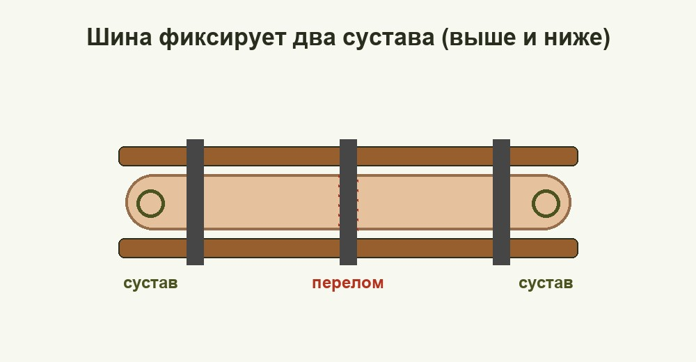

Медициналық дайындық Medical Training Медицинская подготовка
Сынықты тану және мүшені дұрыс қозғалмайтын ету — асқынудан сақтайды. Recognise a fracture and immobilise the limb correctly — it prevents complications. Распознать перелом и правильно обездвижить конечность — спасает от осложнений.

Сынық — сыртқы күштің әсерінен сүйек тұтастығының толық немесе жартылай бұзылуы. Сынық жабық (тері бүтін) және ашық (жара бар, сүйек көрінуі мүмкін) болып бөлінеді; ашық сынық жұқпа мен қан кету қаупіне байланысты ауырырақ. Алғашқы көмектің мақсаты — мүшені қозғалмайтын ету (иммобилизация) арқылы ауырсынуды азайту, сүйек сынықтарының тіндерді, тамырлар мен нервтерді зақымдауын болдырмау, шок пен қан кетудің алдын алу. A fracture is a complete or partial break in the integrity of a bone caused by an external force. Fractures are either closed (skin intact) or open (a wound is present and bone may be visible); open fractures are more serious because of the risk of infection and bleeding. The aim of first aid is to immobilise the limb, thereby reducing pain, preventing the bone fragments from damaging tissue, vessels and nerves, and forestalling shock and bleeding. Перелом — полное или частичное нарушение целостности кости под действием внешней силы. Переломы бывают закрытыми (кожа цела) и открытыми (есть рана, возможна видимая кость); открытые тяжелее из-за риска инфекции и кровотечения. Цель первой помощи — обездвижить конечность (иммобилизация), уменьшив боль, не дать отломкам повредить ткани, сосуды и нервы, предупредить шок и кровотечение.
Сенімді белгілер (деформация, табиғи емес қозғалғыштық, крепитация) — сынықты дәл көрсетеді; ықтимал белгілер (ауырсыну, ісіну, қызмет бұзылуы) — созылу мен шығуда да кездеседі. Күмән болса, жарақатты сынық деп санап көмек көрсет. Reliable signs (deformity, abnormal mobility, crepitus) confirm a fracture; probable signs (pain, swelling, loss of function) also occur with sprains and dislocations. When in doubt, treat the injury as a fracture. Достоверные признаки (деформация, патологическая подвижность, крепитация) подтверждают перелом; вероятные (боль, отёк, нарушение функции) бывают и при растяжении, вывихе. При сомнении считай травму переломом.
| БелгіSignПризнак | СипаттамаDescriptionОписание |
|---|---|
| ДеформацияDeformityДеформация | мүше пішінінің өзгеруі, қисаюы және қысқаруы — сенімді белгіchange of shape, angulation and shortening of the limb — a reliable signизменение формы, искривление и укорочение конечности — достоверный признак |
| Табиғи емес қозғалғыштықAbnormal mobilityПатологическая подвижность | буын жоқ жерде қозғалу; сүйек сықыры (крепитация) — сенімді белгіmovement where there is no joint; a bone crunch (crepitus) — a reliable signдвижение там, где нет сустава; хруст отломков (крепитация) — достоверный признак |
| АуырсынуPainБоль | қозғалғанда және басқанда күшейетін өткір ауырсынуsharp pain worsening with movement and pressureсильная боль, усиливающаяся при движении и нажатии |
| ІсінуSwellingОтёк | тез өсетін ісік және көгеру (гематома)rapidly growing swelling and a bruise (haematoma)быстро нарастающий отёк и кровоподтёк (гематома) |
| Қызмет бұзылуыLoss of functionНарушение функции | мүшені тіреу немесе қимылдату мүмкін емесthe limb cannot bear weight or be movedконечностью невозможно пользоваться или опереться на неё |
| ТүріTypeВид | МысалдарExamplesПримеры | ТағайындалуыPurposeНазначение |
|---|---|---|
| ТабельдікIssuedТабельные | сатылы (Крамер), Дитерихс, пластикалық, пневматикалықladder (Kramer), Dieterichs, plastic, pneumaticлестничная (Крамера), Дитерихса, пластиковые, пневматические | кез келген мүшеге — берік әрі бейімделгішany limb — strong and adjustableлюбая конечность — прочно и регулируемо |
| Қолда барларImprovisedПодручные | тақтай, таяқ, шаңғы, картон, мылтықboards, sticks, skis, cardboard, a rifleдоски, палки, лыжи, картон, оружие | табельдік шина жоқта — далада қол астындағыданwhen no issued splint — from whatever is at hand in the fieldпри отсутствии табельной — из подручного в полевых условиях |
| Орамал таңғышTriangular slingКосыночная повязка | үшбұрышты орамал, кең бинтtriangular bandage, wide gauzeтреугольная косынка, широкий бинт | қол мен бұғананы (ключица) аспалы күйде ұстауsupports the arm and collarbone in a slingподвешивание руки и фиксация ключицы |